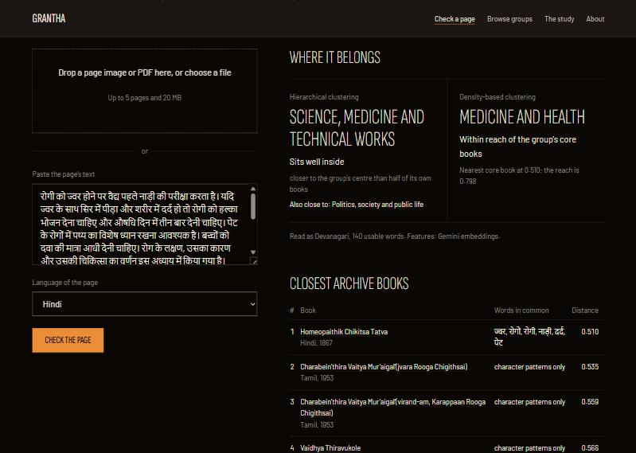

Every old page has neighbours
Upload a scanned page and see which archive books it belongs with.

1. Read the page
Tesseract reads the scan in its own script, after turning it upright.
இரவுக்குறிவந்து பெயருந் தலைமகனைக் கண்ணுற்றுரின்ற தோழி வரைவுகடாயது. (இ-ள்) சொடுவரி வேங்சையாழ் கோட்பட்டுப் பிழைத்து மடிந்த செவி
- Model
- Tamil (tam), Tesseract 5
- Mean word confidence
- 73 of 100
2. Find its neighbours
Its words are compared with every book in the study. The five closest come back with the words they share.
- 1
Checking the page against the archive
The five closest books appear here.
3. See where it sits
Each dot is a book. The lit dots are its group; the ring is the page.
Before
One scan, catalogued by title and scanning centre, read alone.
After
The same scan read beside the books that share its words, in any of eight languages.
What it reads
Printed books in eight languages from the Digital Library of India. A page image or a PDF of up to five pages.
| Language | Books in the study | Readable enough to group | Median OCR confidence |
|---|---|---|---|
| English | Counts load from the study | ||
| Hindi | |||
| Sanskrit | |||
| Bengali | |||
| Gujarati | |||
| Telugu | |||
| Kannada | |||
| Tamil | |||
Bring your own page
Groups are exploratory, not a catalogue. The study page says how far to trust them.
